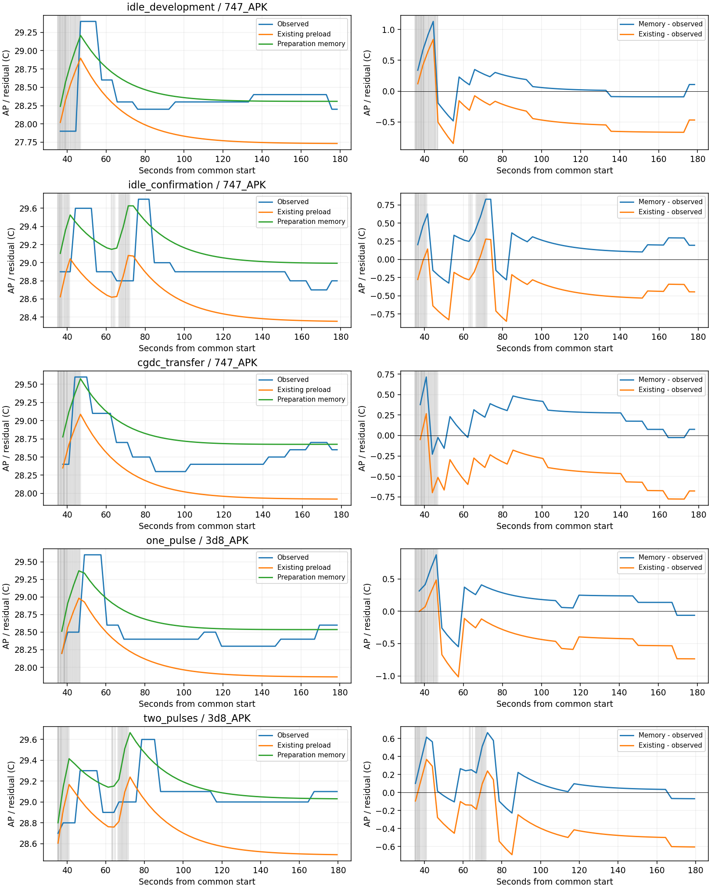

2026-10-02 · 기존 자료만 사용 · 추가 실측 0 · experiment_ready=false
평균·최고오차는 개선했지만 후기 재상승은 미해결입니다. 이미 본 자료의 사후 평가이며 독립 확인·정확도 PASS·정책 비용 승격이 아닙니다.
비교: 기존 preload 유효 유휴 기준 후보 → 준비 이력 후보. 네 사후 평가 세션은 계수 적합에서 제외했습니다. 공통창 전체 오차가 아니라 첫 부하 이후 기존 표본 창입니다.
| 자료 | MAE | 최대 절대오차 | 최고온도 부호오차 |
|---|---|---|---|
| 개발(적합) | 0.488 → 0.183 | 0.849 → 1.132 | -0.503 → -0.191 |
| 유휴 확인(사후) | 0.418 → 0.257 | 0.851 → 0.827 | -0.621 → -0.073 |
| CG_DC 전이(사후) | 0.463 → 0.241 | 0.778 → 0.715 | -0.513 → -0.024 |
| 한 묶음(사후) | 0.450 → 0.248 | 1.015 → 0.872 | -0.617 → -0.228 |
| 두 반묶음(사후) | 0.405 → 0.146 | 0.691 → 0.665 | -0.361 → 0.065 |
개발 최대오차는 0.849→1.132°C로 악화했습니다. 수치가 줄지 않은 항목도 그대로 보존합니다.
회색: 실제 작업 상태. 관측 초기값은 마지막 부하 전 AP이며 그 이후 관측 AP·전류는 예측에 넣지 않습니다.

τ=30초, γ=0. 후기 후보−기존 변화의 대부분은 유효 유휴 기준 E의 변경(+0.539…+0.757°C)입니다. 초기 H 효과는 −0.005…−0.008°C, 새 부하 기억 효과는 0입니다. 숨은 잔열 또는 지연 가열을 물리적으로 식별한 결과가 아닙니다.
후기150–175초: 한 묶음 관측+0.200°C/예측−0.000046°C, 두 반묶음 +0.100/−0.009219°C. 방향·크기 문제가 남았습니다. 사전 AP의 가정 ±0.05°C 민감도는 미래 경로 최대0.204–0.213°C이며 인증 오차·신뢰구간이 아닙니다.
기존 4세션·3,174요청을 23개 조건층으로 구분했습니다. AP–처리시간 조정 연관은 양수13/음수10으로 일관되지 않습니다. 시간순서·이전 부하·클럭/경합을 분리하지 못하므로 스로틀 곡선을 만들지 않았습니다. thermal status0을 스로틀 부재로 해석하지 않습니다.
실제 lane 일정과 충분한 부하 전 AP가 있는 보관 사례의 조건부 진단입니다. 새로운 일정의 J/AP·열 피드백 정책 순위는 null/미지원입니다. 기존 시뮬레이터 기본값과 strict 범위를 유지합니다. 새 독립 확인0·새 APK0·새 계획/claim0.
보고서·자료 역할·다음 행동·재현 명령 · 적합 전 계약 · 전체 오차 CSV · 산술 분해 · 온도/시간 층별 결과 · PC 검증 · 시뮬레이터 시작